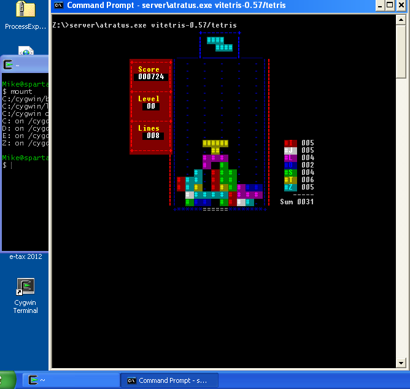
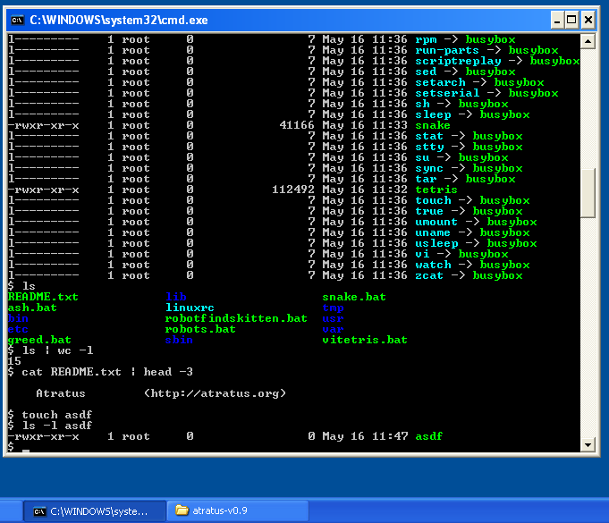
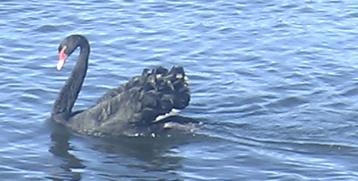

Atratus is a Windows program that can run unmodified Linux binaries, eliminating the need to port Linux software to Windows.
Atratus is Windows software, that provides similar functionality to Cygwin using Linux binaries. Atratus can load ELF format executables created with gcc under Linux and run them on a Windows system without a CPU emulator or virtual machine. Atratus emulates the Linux system call interface, and works in a similar way to User Mode Linux.
Atratus maybe be useful to you if:
Applications that work reasonably in v0.12 include:
To try it out, download the Atratus v0.12 Windows installer, extract to your desktop and run one of the batch files (e.g. vitetris.bat) under the atratus-v0.12 folder. 64-bit Windows is now supported.
 Releases are made monthly around the middle of the month, and are announced on the mailing list and Freecode.
| Date | Version | Source | Windows Binary |
|---|---|---|---|
| 22 Aug 2013 | 0.12 | atratus-0.12.tar.gz | atratus-v0.12-install.exe |
| 19 July 2013 | 0.11 | atratus-0.11.tar.gz | atratus-v0.11-install.exe |
| 16 Jun 2013 | 0.10 | atratus-0.10.tar.gz | atratus-v0.10-install.exe |
| 16 May 2013 | 0.9 | atratus-0.9.tar.gz | atratus-v0.9-install.exe |
| 18 Apr 2013 | 0.8 | atratus-0.8.tar.gz | atratus-v0.8-install.exe |
| 14 Mar 2013 | 0.7 | atratus-0.7.tar.gz | atratus-0.7-bin.zip |
| 12 Feb 2013 | 0.6 | atratus-0.6.tar.gz | atratus-0.6-bin.zip |
| 18 Jan 2013 | 0.5 | atratus-0.5.tar.gz | |
| 14 Dec 2012 | 0.4 | atratus-0.4.tar.gz | |
| 18 Nov 2012 | 0.3 | atratus-0.3.tar.gz | |
| 16 Oct 2012 | 0.2 | atratus-0.2.tar.gz | |
| 15 Aug 2012 | 0.1 | atratus-0.1.tar.gz |
Source code is also available via git at git://atratus.org/git/atratus and browsable via gitweb.
Source code for the binary package (busybox, vitetris and robotfindskitten) is available here. The build script is available as a separate git repository.
Atratus source code is licenced under the LGPL v2
If you don't wish to compile atratus yourself, use the self-extracting installer.
| OS Version | 32-bit | 64-bit |
|---|---|---|
| Windows 2000 | no | n/a |
| Windows XP | yes | ? |
| Windows Vista | ? | ? |
| Windows 7 | yes | yes |
| Windows 8 | ? | ? |
Vista and Windows 8 may work, but are untested.
There are a number of projects that run Posix source or Linux binaries on Windows with various features and limitations:
atratus is the Latin word for darkened or black.
cygnus atratus is the scientific name for the Black Swan, an Australian bird. The Black Swan is a book written by Nassim Taleb about improbably events.
atratus-devel - patches, feedback and other discussion about the atratus project
For issues with the website/mailing list, please mail me directly.